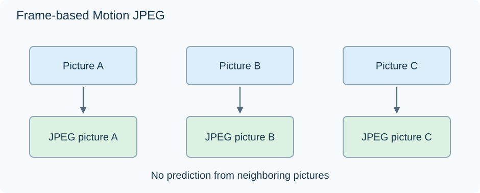

Motion JPEG Video
Motion JPEG (MJPEG) builds moving video from independently JPEG-compressed pictures. The usual frame-based form does not use another picture's samples to predict the next one.

The diagram shows a frame-based form. Some implementations code the two interlaced fields separately.
An independent picture can still be highly compressed
Common MJPEG uses JPEG's lossy DCT-based picture coding. Within a picture, blocks are transformed into coefficients representing spatial patterns. Quantization approximates those coefficients, and entropy coding describes their values compactly.
The decoder reconstructs each picture from its JPEG coding information. The neighboring video pictures do not supply its temporal predictor. Its JPEG tables and the applicable sample/container description still have to be available.
This combines compressed picture storage with straightforward frame access. Once the reader locates picture C and supplies its coding information, it does not first need to reconstruct A and B as scene references.
The independence also determines what gets repeated. A wall unchanged between A, B, and C is described within each new JPEG picture again. An inter-predicted codec can instead reuse an earlier reconstructed wall and describe mainly its changes.
Assign pictures to the timeline
The surrounding video format supplies the sequence and timing. At 25 fps, each picture spans 40 ms. Let three independently encoded pictures have these illustrative sizes:
| Picture | Duration | JPEG payload |
|---|---|---|
| A | 40 ms | 40,000 bytes |
| B | 40 ms | 30,000 bytes |
| C | 40 ms | 50,000 bytes |
Their total is 120,000 bytes across 0.120 second:
120,000 × 8 ÷ 0.120 = 8,000,000 bit/s, or 8 Mb/s.
Constructed sizes, excluding container and audio overhead; no encoder benchmark or recommended setting is implied.
C can contain more difficult texture than B and need a larger JPEG even though both have the same dimensions and duration. Independence does not require identical frame sizes.
A frame can contain two coded fields
Some MJPEG representations encode interlaced fields separately and carry their JPEG bitstreams together in one video frame. The decoder must recover both field images and interpret their order and times correctly.
QuickTime's documented Motion-JPEG A and B forms differ in marker and header conventions, including where required compression tables and field information are supplied. Other containers can use other conventions.
The JPEG image standard therefore supplies the underlying picture coding, while the particular MJPEG representation supplies its video organization. Those two pieces determine how to locate, decode, and schedule the images in an older camera clip or capture.
See Also
- Intra-Frame Video Compression
- How Video Codecs Affect Playback Compatibility
- Video Compression Artifacts
- Apple ProRes Video